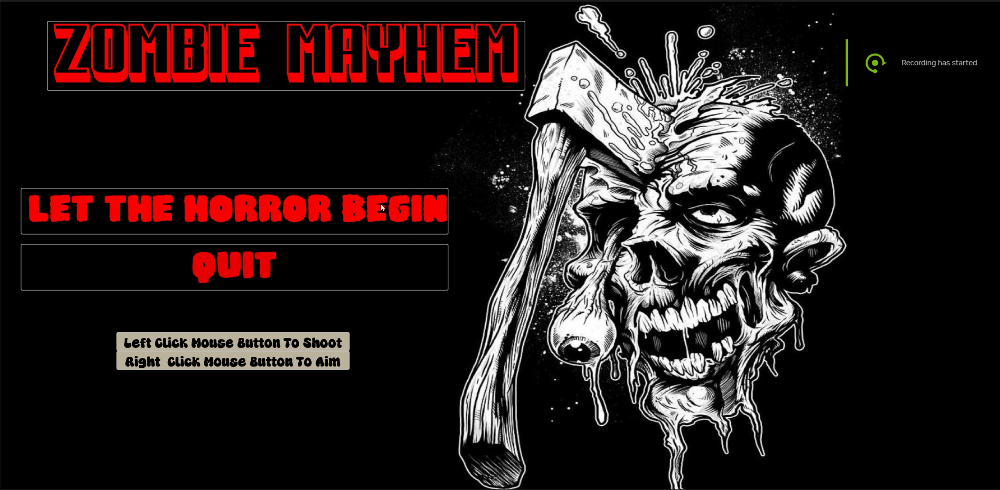
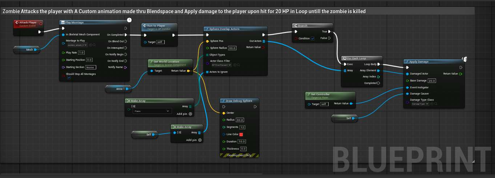

Project Overview
Zombie Mayhem is a first-person survival shooter developed solo in Unreal Engine 5 using Blueprints. Designed around a wave-based progression system, the game challenges players to survive against relentless hordes of zombies with escalating difficulty, reactive combat, and immersive feedback systems.
Genre
First-Person Survival Shooter
Studio
Personal Project
Platform
PC, Mac OS, Linux
Engine & Tools
Unreal Engine 5, Blueprints, UMG
Duration
Solo development
Team Size
Solo Developer
Tech Stack
Core Engine & Scripting
- Unreal Engine 5
- Blueprint Visual Scripting
- UMG (Unreal Motion Graphics)
- First-Person Template
Gameplay & AI
- Pawn Sensing & Behavior States
- Wave Spawning & Difficulty Scaling
- Trace-Based Shooting & Hit Detection
- Blend Spaces & Animation Montages
UI/UX & Feedback
- HUD (Health Bar, Minimap)
- Screen Transitions & Win/Lose States
- Blood Overlay & Damage Effects
- VFX (Muzzle Flash, Impacts)
Design & Evaluation
- Game Design & Player Feedback
- UX Design & Evaluation
- Iterative UX Testing
Features & Contributions
Main Menu & Flow
Main menu leads into the floating-island arena. Animated screen transitions and clear win/lose states with retry/exit options keep flow predictable. All gameplay systems, AI, wave logic, and UI were built from scratch in Blueprints.

Wave System & Combat
Dynamic wave generator ramps challenge with larger groups and tougher enemies; waves spawn from two locations, with zombie count doubling each wave. Trace-based shooting includes recoil, precise hit detection, headshot/body differentiation, and surface-based impact VFX. Player health regens 5 HP every 5 seconds until 50; damage overlays and a blood effect below 50 HP give clear feedback.

Zombie AI & Behavior
Fully autonomous enemy AI in Blueprints: Pawn Sensing for detect, chase, and engage. Enemies switch from slow walk to fast run inside acceptance radius. Idle, chase, and attack states use blend spaces and custom animations; attacks apply 20 HP in a loop. Death uses a fall animation, then the body persists ~5 seconds before removal. Running animations and zombie sounds reinforce threat and improve readability.

HUD & Game Over
UMG-built HUD: health bar with animated feedback and a functional minimap for player and zombie positions. Wave-start events use render-opacity transitions. Custom death and win screens with smooth transitions; blood overlay when health is below 50. Designed with clear feedback and situational awareness in mind.

UX Testing & Polish
UX improvements follow principles from Celia Hodent’s The Gamer’s Brain. Playtests with a non-classmate (no prior instructions) highlighted: strong response to running zombies and audio; satisfaction with blood hit feedback; quick adaptation to movement/aiming states; engagement with waves and health regen; minimap valued for spatial awareness. Suggested future work: clearer head/body hitboxes and ammo or reload mechanics for resource pressure.
Technical Implementation
Blueprint architecture
BP_Zombie holds AI, attack logic, and death; BP_FirstPersonCharacter handles movement, shooting, and health (including regen and damage overlays). ZombieGameMode drives wave spawning and progression with timer-based spawns from multiple locations. All logic is Blueprint-only—no C++.
Combat & hit feedback
Shooting uses line traces from the weapon; hit location and surface type drive different impact VFX and damage (head vs body). Gun motion and SFX are triggered on fire. Blood and hit reactions on zombies give immediate feedback. Different surfaces use different decals/particles for clarity.
AI & animation
Pawn Sensing drives detection and range; behavior states (idle, chase, attack) are updated in Blueprints and reflected with blend spaces and montages. Acceptance radius switches movement from walk to run. Attack applies damage on a loop until the zombie is killed; death triggers the fall animation and a short persist before despawn.
UI & game flow
MainWidget_W hosts the health bar and minimap; WB_Minimap tracks player and zombie positions. Render opacity animations handle wave alerts and transitions. Custom events fire for win/lose; Retry and Exit wire back into the appropriate flows. Blood overlay is toggled by health threshold using opacity transitions.